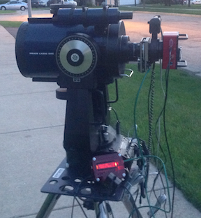
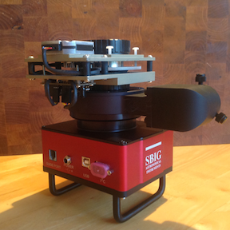
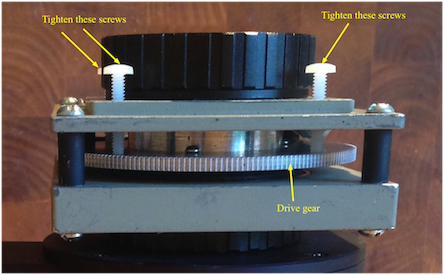
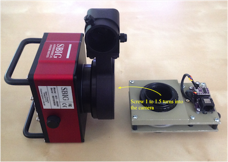
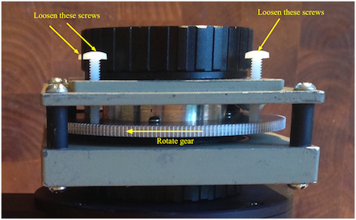
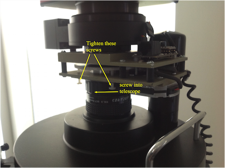

Installing the Field DeRotator

by
C.Y. Tan
June 2015
Copyright
Copyright (C) 2015 C.Y. Tan
Permission is granted to copy, distribute and/or modify this document
under the terms of the GNU Free Documentation License, Version 1.3
or any later version published by the Free Software Foundation;
with no Invariant Sections, no Front-Cover Texts, and no Back-Cover Texts.
A copy of the license is included in the section entitled "GNU
Free Documentation License".
Table of Contents
Introduction
This manual describes how the user connects the derotator to both the
telescope and the imaging camera.
Nomenclature
Interface

Controller

DeRotator

Installing the camera to the derotator

IMPORTANT! Detach the 4-pin motor stepper motor drive cable from the derotator drive
module before continuing.
The reason for disconnecting the drive
cable cable is because current is generated when the drive gear is
rotated and the stepper motor IC can be damaged by this current.

This is the most tedious part of the installation that involve a
number of steps.
Tighten the nylon screws
First tighten the nylon screws on the derotator so that the drive gear
does not move.

Catching the threads of the camera
With the drive gear immobilized, it is easy to get the first few turns of
the male T-thread on the derotator into the camera.

Screwing the derotator into the camera
For the SBIG STF-8300
camera with an off-axis guider OAG8300 attached, it is not possible to
directly screw in the derotator into the camera because the off-axis
guider gets in the way. The only way to screw the derotator into the
camera is by
- Loosening the nylon screws so that the drive gear can move
freely.
- Rotating the drive gear with your thumb until the derotator is
screwed completely into the camera. See picture below.

Installing the derotator and camera to the telescope
First tighten the nylon screws again and rotate the SCT female
connector into the male SCT connector on the telescope.

Once the derotator and camera are attached to the telescope,
- Loosen the nylon screws
- Attach the stepper motor driver cable back to the derotator drive
module.
Remaining steps
The remaining steps involve hooking up the controller to the derotator
and either using the interface to connect to the controller or
operating the controller in standalone mode:
GNU Free Documentation License
This document is copyrighted under the GNU Free Documentation License